3 能源
3.1 主要能源形式
3.1.1 能源系统总体构成
本世界能源系统采用分级主从结构，以可再生清洁能源为主体，辅以储能与备用能源体系，形成具备稳定性、可调度性与冗余能力的能源网络。
能源优先级自高至低依次为：
水能
太阳能、风能
生物质能与化学能（与真菌系统耦合）
化石能源（仅作为极端工况下的备用能源）
该优先级结构用于指导能源规划、设施选址、系统调度及长期运行管理。
3.1.2 总体目标与边界条件
供能边界：以香格里拉高海拔水系为主能，形成多级梯级小水电“源—网—荷—储”闭环，确保生命支持、科研与基本生活连续运行。
能耗边界：以“人均能耗控制 11900 kWh/yr”为总控制线；各行业能耗预期占比作为空间配比动态调配的约束（即规划须映射到该结构）。
规划约束：能源设施必须服从“地形水文—功能分区—安全边界—可维护性—可逆性”五项约束的共同最优。
3.1.3 主导能源形式：水能系统
1. 能源类型与工程形式
水能为本世界的第一主导能源形式，采用四级梯级、径流式小型水电系统。
| 指标 | 数值 |
|---|---|
| 总装机容量 | 28 MW |
| 设计年发电量 | 180 GWh |
| 水源类型 | 高山冰川融水与径流 |
| 工程形式 | 径流式引水，无大型拦河坝 |
该系统不形成大规模水库，对河道连续性与生态系统干扰较小。
2. 时间与空间分布特性
时间分布：
水量存在季节变化，通过梯级调度与储能系统实现负荷平衡。
空间分布：
能源设施沿河谷高差布置，形成线性分布的基础能源骨架。
3. 转换效率与系统特性
水轮机效率：80%–94%
发电机效率：>90%
水能系统作为基础负载能源，承担全年稳定供能任务。
3.1.4 辅助可再生能源形式
3.1.4.1 太阳能系统
1. 资源特性
| 维度 | 特征 |
|---|---|
| 时间分布 | 干湿季差异显著 |
| 空间分布 | 高原坝区辐射强 |
| 利用形式 | 分布式光伏 |
2. 技术路径
建筑表皮集成光伏
空旷区域分布式光伏阵列
与水电系统构成“水光互补”模式
3.1.4.2 风能系统
1. 空间分布特征
| 区域 | 风能特性 |
|---|---|
| 山脊、垭口 | 风速高、稳定 |
| 坝区 | 风能较弱 |
2. 系统角色
风能作为间歇性补充能源，不承担基础负载。
3.1.5 生物质能与化学能系统（真菌耦合）
1. 能源载体
菌类残余物
农业与生活有机废弃物
2. 转化路径
| 路径 | 产物 |
|---|---|
| 厌氧消化 | 沼气 |
| 热解 | 生物油、生物炭 |
| 生物电化学 | 电能 |
3. 系统定位
该系统承担物质闭环与低功率能量补偿功能。
3.1.6 储能系统
| 类型 | 用途 |
|---|---|
| 固态锂电池 | 峰谷调节、应急 |
| 化学能储存 | 平抑波动 |
| 生物质储备 | 季节性调节 |
3.1.7 备用能源系统（化石能源）
化石能源仅作为极端工况备用能源存在：
不纳入常态调度
不进行本地规模化开采
3.1.8 人均能耗约束与能源匹配
| 指标 | 数值 |
|---|---|
| 人均综合能耗 | 11,900 kWh/人·年 |
| 人均直接用电 | 800 kWh/人·年 |
| 峰值功率 | < 1.2 kW/人 |
3.1.9 系统集成与能源网络结构
能源系统通过以下方式完成整合：
水—光—风互补
生物质—真菌—能量闭环
电能—热能—化学能梯级利用
储能系统平滑时间波动
详见下图：
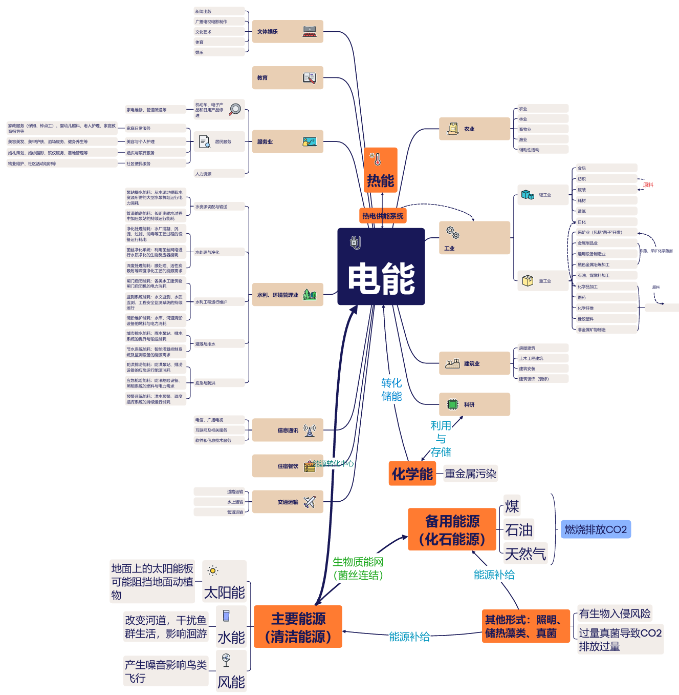
3.1.10 未来能源：中微子能量立方
1. 技术性质与定位
在百年之际到来之前，中微子能量立方被定义为前沿实验性能源接口，其技术成熟度尚未达到主导能源系统的运行标准。
其在本世界前百年运行中的定位为：
非主导能源
非常态能源
参与当前能源平衡计算
但到达新星球的半数人将根据记忆中的技术细节对中微子能量立方进行开发、研究与迭代，便于与百年后的另半数人对接技术。以下均为对百年后该能源科技将达到功能和作用的描述。
2. 基本原理
该装置基于以下理论路径：
宇宙中微子通量持续存在
高密度探测介质中可发生概率能量沉积
通过大尺度阵列与长时间积分，提取可用能量信号
该原理目前仅在实验与理论模型层面得到验证。1
3. 系统结构特征
| 维度 | 特征 |
|---|---|
| 装置尺度 | 立方阵列 |
| 核心组件 | 探测介质、信号放大单元 |
| 输出形式 | 高功率连续能量流 |
| 运行状态 | 实验性、统计学可预测 |
4. 能源特性
能量密度高
输出功率稳定
对时间尺度高度敏感
用于即时负载供能
5. 阶段性应用范围
该能源形式仅用于：
前沿能源理论验证
长周期能量统计研究
极端条件下的能量获取实验
可适时运用于社会运行的关键系统。
6. 与现有能源系统的接口关系
中微子能量立方与现有能源体系的关系如下：
| 关系维度 | 描述 |
|---|---|
| 与水能 | 有耦合 |
| 与风光 | 有调度关联 |
| 与储能 | 接入 |
| 与应急系统 | 具备一定应急能力 |
3.2 能源空间布局设计
3.2.1 空间切割
（从大到小的“能量地理学”）
3.2.1.1 区域尺度
流域—山体—谷地
切割对象：水能资源的“形成区—汇集区—利用区—回归区”。
形成区（雪线/冰川融水源）：作为水能的上游“不可扰动带”，仅布设水文监测与取水口级别设施；禁止任何永久性建筑群进入。
汇集区（高山溪谷）：布设径流式引水—调压—检修廊道，以分散、可替换的方式串联各级电站。
利用区（电站与储能核心）：集中布置“梯级小水电站+主储能+主配电”的三联体，形成能源系统的“心脏”。
回归区（尾水回归与生态廊道）：尾水回归与湿地缓冲系统合并设计，作为“能量转化后的环境接口”，与生活区之间保持生态与卫生缓冲距离，同时保证支流河坝蓄水最终回归自然，以将对自然的干扰降至最低限度。
注：水能为主、径流式引水、无大坝、生态干扰最小
3.2.1.2 场地尺度
定居点—功能环带—安全边界
将定居点按“供能核心—稳定运行—生命支持—共生生活—教育科研—精神与艺术”形成能量梯度的环带/分区组织。其中：
供能核心（能源心脏区）：主电站（梯级汇入端）、主储能、主配电、主通信与能管中心（EMS）。
稳定运行区（安全需求）：应急电源、备品备件库、检修工坊、结构健康监测节点；与供能核心保持最短维护距离。
生命支持区（生理需求）：水处理、空气处理、食物生产、恒温系统——以“负荷连续性优先”，与供能核心采用双回路供电。
共生生活区（归属与爱）：低功耗生活负荷集中在可控半径内，优先接入低压直流与余热管网。
教育科研区（尊重/成长）：科研用能波动大，采用“分时授权+负荷削峰”；同时与创客空间共享设备级能源计量与安全隔离。
精神与艺术区（自我实现）：以“体验质量与安全”为主，采用可预测负荷（演出/展陈/冥想）+可调度策略（分时运行）。启明星综合体的集中照明、中庭空间、功能分区与人流组织，作为“高密度公共建筑能量组织样板”。
3.2.1.3 组团尺度
建筑群/街区/廊道
在组团层面，以“能源廊道（Energy Spine）”统一组织：
主廊道：主配电+数据干线+低温/中温热网（或冷热联供水网）共廊；优先走检修可达的“半地下/山体嵌入”路径。
次廊道：面向居住组团与公共组团的分配支路；采用模块化支线，便于分期建设与局部替换。
微网单元：每个组团形成独立“计量—控制—切离”能力，可在主网故障时维持关键负荷。
在不同居住形态中，组团能源策略有所差异：
眠林（低干预、分散点状居住）：能源系统“必要时可用”，隐蔽、低可见性、低维护频次；以微型储能+低功耗末端为主。
镜漪园（水域共生、镜面与光影）：能源设施可与水处理、蒸馏余热、光电/光热表皮结合，形成“看不见的机理+可被感知的光影效果”一体化组织。
泰坦菌丝（垂直森林、能源转化中心在根部）：能量汇聚在“根部公共基座”，中部居住层以垂直分配为主；冠层精神空间以可调度负荷组织。
洄域（公共核心、缓慢生活）：能源系统去中心化分散布置，稳定低峰值输出；以储能平滑调节为主，能源作为公共生活的背景条件存在。
静音立方（低噪环境、感知优先）：能源系统以低功率、连续供能为主，注重稳定性而非输出规模；通过菌丝复合材料实现被动降噪与能耗削减，照明与设备运行受限于声学与感知阈值，能源配置服从“静谧优先”的空间目标。
晓月（社区单元、日常节律）：能源以社区级单元组织，结合屋顶光伏与局部储能；供能随日常活动节律分时调度，可理解、可维护。
净原（低密草甸、个体自持）：采用建筑级能源自持模式；各单体独立发电与储能，弱化集中供能，形成分散冗余的稳定系统。
3.2.1.4 单体尺度
建筑级：功能—结构—机电一体
切割原则：先按“负荷类型”，再按“安全等级”，最后为空间美学。
连续负荷：生命支持（恒温、通风、水循环、关键实验保存）。→ 双路供电 + 就地储能。
脉冲/峰值负荷：实验设备、演出灯光、运动场馆某些设备。→ 组团级削峰 + 分时调度。
舒适性负荷：照明、一般生活电器。→ 末端高效与行为侧约束。
启明星综合体作为“文体娱教四位一体”高复杂公共建筑，按其“中央中空枢纽—环形步道—六大功能区”的组织方式，把能源分配做成清晰的楼层—分区—回路对应关系：
中央中庭与竖向交通：作为“公共连续负荷骨架”；
六功能区：作为“可切离、可调度负荷单元”；
顶部穹顶与场馆：作为“事件负荷（演出/活动）”的独立回路与临时策略单元。
3.2.1.5 系统尺度
源—网—荷—储的工程切割
能源系统在世界中切割为五个可分别设计、可分别验收的子系统：
源端系统（梯级小水电）：取水—引水—机组—并网；以检修可达与冗余替换为核心。
储能系统（固态电池为主）：主储能站 + 组团储能柜 + 末端UPS；
按关键负荷分级配置。
配电系统（主干—分配—末端）：主干环网 + 分区配电房 + 末端直流/交流混合；关键节点双回路。
热管理系统（温控对应的空间化落点）：“温控负荷”明确落到——建筑围护（被动优先）+余热回收（系统优先）+末端补偿（最后手段）。
能管系统（EMS）：计量、预测、调度、告警、权限；确保各产业中高波动用能仍在总线内可控。
3.2.2 时间切割
3.2.2.1 日周期（24h调度）
夜间低谷：优先安排可延后任务（非关键制备、部分充放电策略、低优先级净化循环）。
白天高峰：科研与生产窗口；同时对公共建筑（启明星综合体）活动用能实施“事件制”申报与预留。
应急时段：任何时间触发时，系统自动进入“关键负荷保活模式”（生命支持 \(＞\) 生活区保障（如基础照明通信）\(\approx\) 工业科研产出 \(＞\) 其他）。
3.2.2.2 季节周期（雨季/枯季、冬季温控）
水文季节性决定电站出力曲线：枯季以“储能—负荷管理”稳定关键负荷；丰水期以“储能补能+维护窗口”完成年度检修。
冬季温控：将温控负荷拆分为“围护结构被动保温（先）—余热利用（中）—主动供热（后）”，并明确每一层级对应的空间构造落点
（例如：生命支持区优先、生活区次之、公共娱乐区再后）。
3.2.2.3 生命周期（建设期—运行期—更新期）
建设期：先成网后成景——先交付“源—储—生命支持”的最小闭环，再逐步扩展公共建筑与文化空间。
（百万立方物资的直接展开将一定程度缩短该建设期）
运行期：按组团设定年度维护停机窗口，保证系统不断供。
更新期：模块化替换（储能、逆变、配电柜、管网段），避免系统性停摆。
3.2.3 人均能耗空间控制
以 11900 kWh/yr/人 作为整体能耗控制线，世界内能耗按活动类型在空间中进行组织与管理：
生活能耗：分布于各居住组团及其配套公共服务空间，涵盖居住照明、基础通信与日常设备运行，构成系统运行的连续基础负荷。
工业与生产能耗：集中于制造区、加工工坊与资源转化设施，相关空间靠近供能核心与稳定运行区布置，形成独立回路与计量单元。
科研能耗：分布于科研区、实验设施及关键样本保存空间（启明星建筑中进行一定额度分配），配置专用供能与本地储能保障，在空间上与居住及公共活动区保持隔离。
游憩与公共活动能耗：对应文体娱教建筑、公共广场及阶段性使用空间，能耗呈时间集中分布，仅在活动周期内形成负荷。
交通与物流能耗：来源于电动轨道交通、磁悬浮交通系统及必要运输节点，其运行频次与时段纳入统一能耗调度。
各类能耗在空间中形成明确对应关系，并通过独立回路与集中调度协同运行，使不同活动的能耗在时间与空间上保持可预期与可控制，从而维持整体人均能耗的稳定水平。
3.2.4 能源分布示意图
以下为能源分布的不同示意图。2
3.2.4.1 能源设施总平面（1:5000）
本图展示能源基础设施在宏观尺度的空间分布，重点表达梯级电站、能源主干网络以及各功能组团的接入关系。
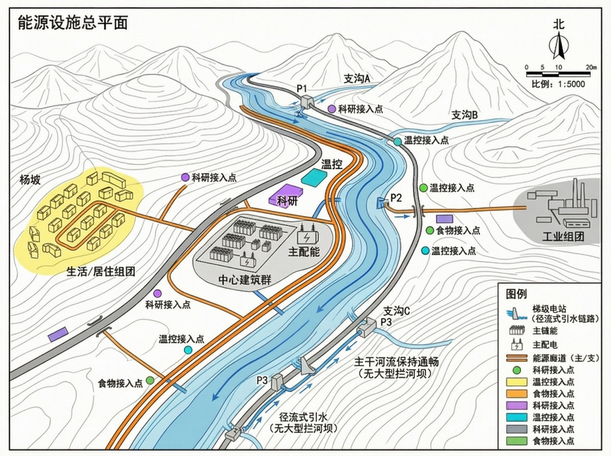
关键设施符号说明
核心能源节点：图中标注的 P1 ~ P4 代表沿河流分支分布的梯级电站节点；“主储能”与“主配电”站作为区域能源调度的核心枢纽，布置在负荷中心或交通便利处。
能源廊道：
主廊道连接各梯级电站与核心枢纽，构成能源输送的骨架；
支廊道则从骨架延伸至各个具体的用能地块。
末端接入点：针对科研、温控、食物、生活、工业及中心建筑群等不同性质的用地，图示标注了具体的能源接入位置。这些接入点为逻辑示意，世界实际建设中将根据建筑单体实际接口位置与敷设条件进行精确替换。
颜色识别体系
为快速区分系统属性，本图采用了明确的色彩编码系统：
基础设施环境
蓝色：水体/河流（能源源头）
灰色：道路交通网络
橙红色：综合能源共廊（电力/热力/通讯）
功能组团分类
紫色：科研组团
青色：温控/环境调节设施
绿色：食物生产/农业设施
黄色：生活居住区之一（平原地带）
3.2.4.2 能源廊道剖面（1:500）
本图展示地下/半地下综合能源廊道的内部构造，采用“电—热—数”一体化共廊设计理念。

廊道功能分仓结构
剖面设计强调功能隔离与运维安全，主要包含以下分仓：
电力舱：容纳高低压电缆，重点关注电磁屏蔽与散热空间。
热能舱：布置供热/供冷管道，通常置于下层或独立分仓以减少热辐射影响。
数字舱：敷设通信光纤与监测线路，作为能源网的神经系统。（耦联菌丝）
检修通道：贯穿全线的人员通行空间，配备完整的通风与应急照明系统。
技术参数与外部关系说明
安全间距（占位值）：图中标注的间距（如 ≥0.3m、≥0.5m）均为初步规划的占位数值。后续世界建设中，将严格依据实际情况进行复核与调整。
环境融合：同时表达廊道顶部的覆土深度、上方道路结构层的关系，以及临河侧的防护措施，展现世界基础设施与自然地形、地面交通的共生关系。
3.2.4.3 负荷分区示意（环带热力图）
本图通过可视化的热力环带，定性展示不同区域的能源负荷强度与类型分布，为后续的能源配置提供决策依据。
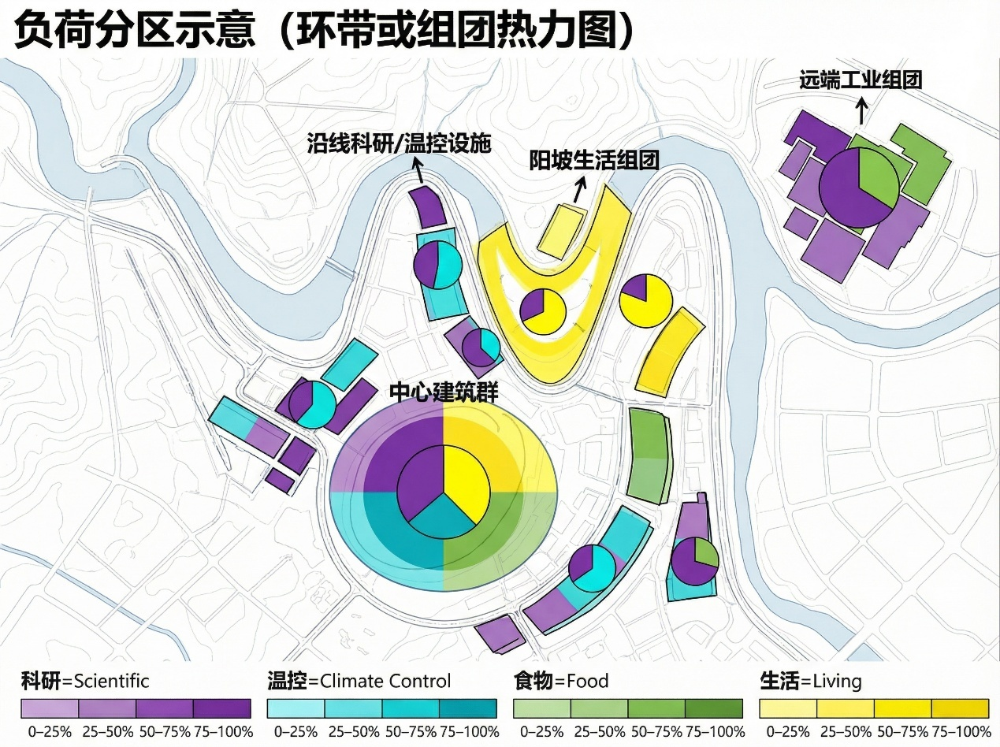
图表逻辑解析
四级色阶与用能类别：图面沿用总平面图的颜色体系（紫/青/绿/黄），分别对应科研、温控、食物、生活四类核心负荷。颜色的深浅（色阶）暗示了负荷密度的差异。
（后期建设将根据实际需求进行调整，如将科研延申至工业生产，食物、生活合并，并区分为生活保障、娱乐活动、交通等模块）
环带与组团几何：环状热力带并非简单的边界线，而是表示该区域的能源辐射范围与核心影响力。组团的几何形态反映了建筑群的集聚特征。
分区中心环形图：每个主要分区的中心设有一个小型环形图（象限图）。该图利用“结构性证据”的表达方式，直观展示该区域内不同用能类型的占比结构。
注：目前图中数据尚未接入具体数值。后续阶段可将实际测算的能耗数据导入，实现百分比数值与标签的自动填充。
3.2.4.4 深化工作
*此小节是对百万立方计划的实然性补充和延申，了解世界时可先忽略
为将百万立方概念方案推进至世界建设工程实施层面，完善世界体系，后续可展开深化工作，在此说明：
CAD/BIM 空间数字化
建立统一工程坐标系与控制网。将示意性的接入点与共廊路径替换为符合实际地形与施工要求的精确线型。
规范化校核
将剖面图中的占位尺寸替换为经过规范计算的确切数值。完善管线排布细节，生成详细的设备材料清单。
数据驱动可视化
将负荷分区热力图与能耗预测表进行关联。通过参数化工具，在图面上生成带精确百分比的能耗结构标注，实现“图数联动”。
标准化出图
按照工程制图标准，确保成果的规范性与专业性。
3.3 能源五要素
3.3.1 中微子能量立方
在传统能源之外，一种源于太阳核聚变、如“无形雨滴”般均匀穿透万物的潜在能源——中微子，正进入我们的视野。它不受昼夜季节影响，稳定持续，但自身能量极低。菌子好逑世界的科学家们通过纳米结构与粒子散射机制，将微弱的核反冲能层层收集、高效转化为电能，实现了能量密度的有效放大。由此诞生的发电系统，静默而可靠，可像家用电器般灵活部署，几乎无需维护，成为分布式基荷电源的有力补充。这一切的实现，依赖于材料与结构技术的持续突破，以及和其他世界的合作，为人类描绘了一个能源获取更为自由、清洁的图景。

3.3.2 辅助能源形式
在“菌子好逑”世界中，我们构建了一套以中微子基核能源为主、多种传统清洁能源为辅的智慧供能体系。中微子如无形的宇宙之雨，穿透一切，为世界提供稳定、持续的基础能量，而风、水、光等自然之力则在其基础上灵动补充，共同编织出一张永续而协调的能源网络：
风在山谷与海岸吟唱，
风轮机随风起舞，将气流的动感转化为电能，虽起伏却自由；
水在江河与潮汐间律动，
水轮机与潮汐坝借助地形与天象，
释放蕴藏于流动中的磅礴之力；
光在高原与旷野洒落，
光伏板如汲取日辉的叶片，在晴雨
交替中捕捉每一缕明媚。

 这些能源虽各有丰枯、起伏与地理约束，但在“菌子好逑”的调度系统中，它们与全天候运行的中微子能量协同互补——风起时光伏可歇，潮落时水力接续，中微子则始终如宁静的背景音，维持着文明基础所需的稳定频率。我们不仅利用自然，更学习其节奏，让能源如生态般呼吸，构建一个自平衡、可持续的能量家园。
这些能源虽各有丰枯、起伏与地理约束，但在“菌子好逑”的调度系统中，它们与全天候运行的中微子能量协同互补——风起时光伏可歇，潮落时水力接续，中微子则始终如宁静的背景音，维持着文明基础所需的稳定频率。我们不仅利用自然，更学习其节奏，让能源如生态般呼吸，构建一个自平衡、可持续的能量家园。
在我们的世界中，中微子能量立方与风、水、光共同编织着永恒的能源韵律。然而，当自然能源进入周期性低谷、中微子立方维护时，世界仍需一道坚实的“能量底线”。这时，深埋地下的化石储备库便悄然启动。它们并非日常主角，却是文明安全感的终极基石。这些亿万年凝聚的能量精华，经过清洁转化，驱动备用机组，轻柔填补能源网络的短暂缝隙。
它们如文明的记忆备份——静默守护着中微子尚未完全覆盖的角落。在这里，化石能源不再是过去式，而是未来能源体系中最沉稳的守望者，只在必需之时，低声诉说那段人类曾仰赖大地馈赠的岁月。
| 要素 | 说明 |
|---|---|
| 空间分布 | 高度集中，依赖特定地质储层（如油田、煤田、气田），全球分布极不均衡。 |
| 时间分布 | 储量有限，不可再生，开采周期长，但输出稳定可控，可随时调用。 |
| 能量密度 | 极高，单位质量或体积蕴含能量大，便于储存与运输。 |
| 利用形式 | 通过燃烧或化学反应释放热能，再经热机转化为机械能/电能。 |
| 转换效率 | 火电站约 30%–45%，燃气轮机可达 40%–60%，受技术与燃料品质影响。 |
3.3.3 计算
3.3.3.1 风能
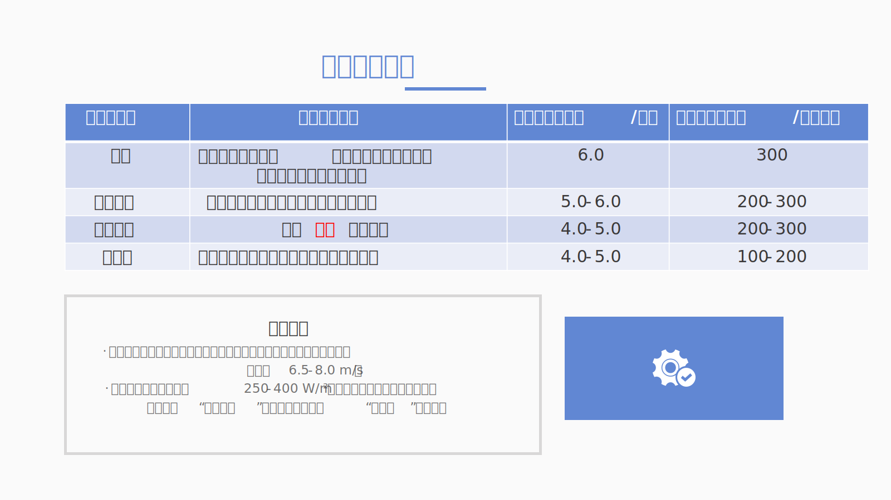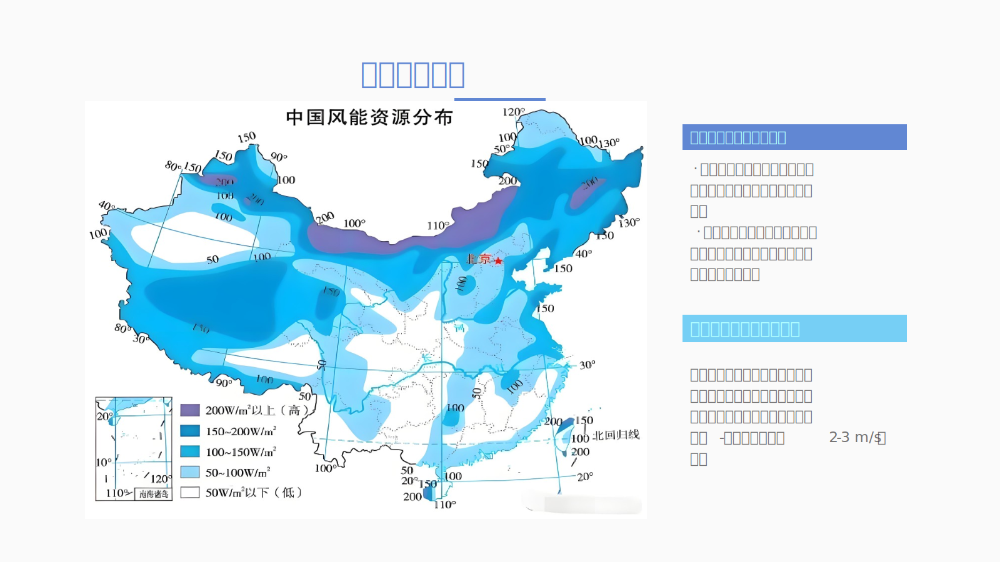
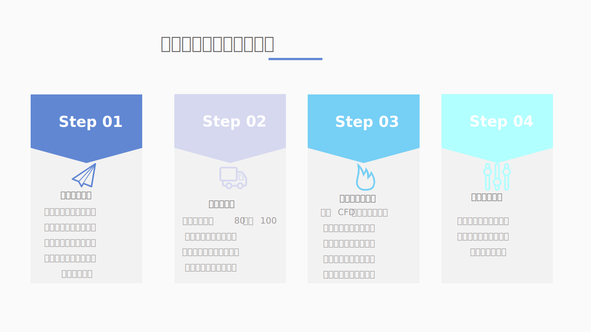

 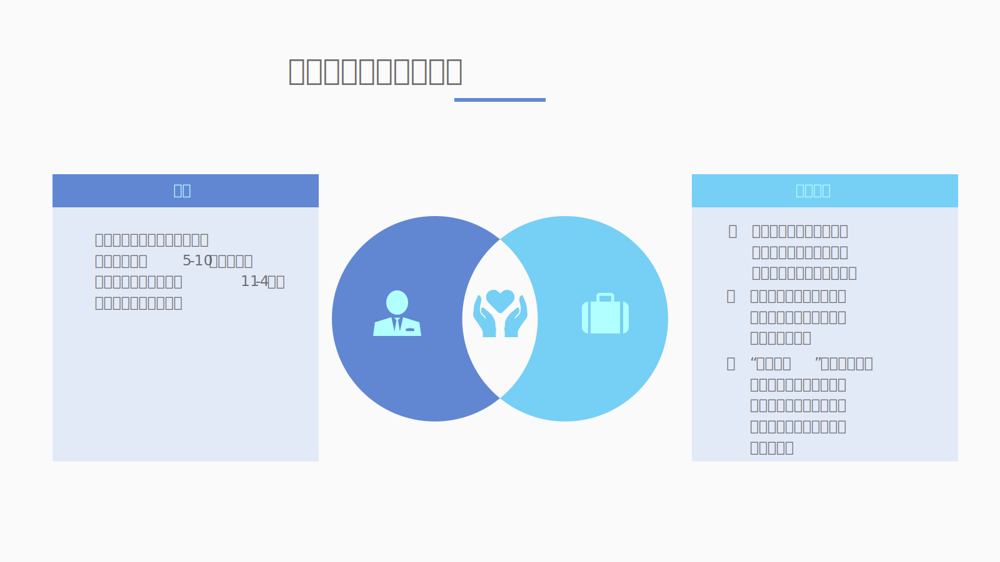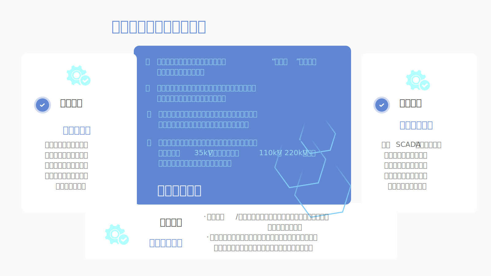
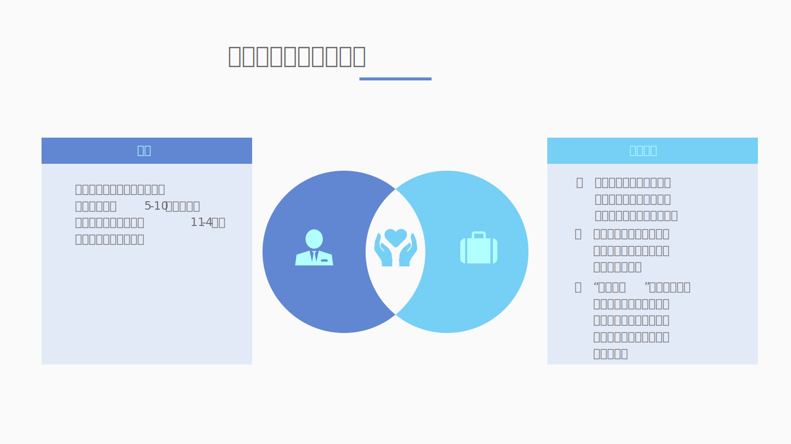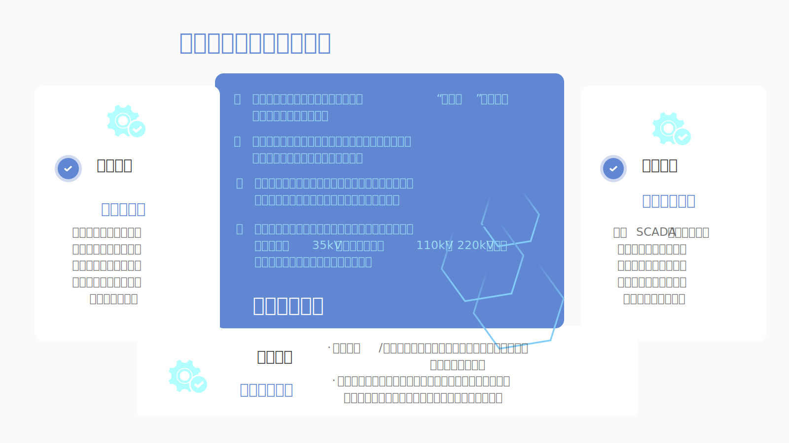
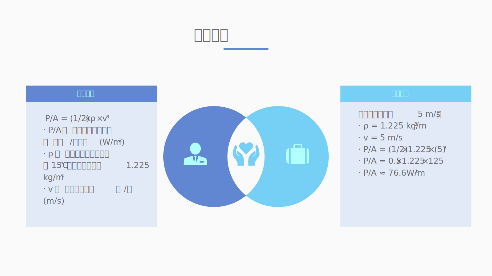
3.3.3.2 水能
1. 传统水能（以金沙江梨园水电站为例）
梨园水电站位于云南省丽江市玉龙县与迪庆州香格里拉市交界的金沙江干流上，是金沙江中游”一库八级”梯级开发的第三级电站，属国家”西电东送”电源点及一等大(1)型工程 。该电站以发电为主，兼顾防洪、旅游等综合效益，装机容量2400兆瓦(4×600兆瓦)，年均发电量超107亿千瓦时，最大坝高155米，总库容8.05亿立方米 。工程于2007年8月筹建，2008年5月导流洞开工，2014年11月下闸蓄水，同年12月首台机组投产，2016年8月全面竣工，2023年7月通过竣工验收 。电站累计发电量超742亿千瓦时，相当于减排二氧化碳6140万吨 。3
梨园水电站与潮汐能要素表现对比
| 要素 | 梨园水电站表现说明 |
|---|---|
| 能量密度 | 1430 m³/s (流量) 16 m (净水头) 157 kJ/m³ (势能) 171.600 GW (理论功率) 94.74 GW (实际功率) |
| 时间分布 | 丰水期流量 约占全年 75%，约为 2547 m³/s 枯水期流量 约占全年 25%，约为 613 m³/s |
| 空间分布 | “一库八级”第三级，空间协同效应显著 通常依赖地形 |
| 利用形式 | 混流式水轮发电机组，圆筒阀和调速系统先进 |
| 转换效率 | 约 80% 水轮机效率一般 80%–94%（白鹤滩电站 96.7%），发电机效率一般在 90% 以上 |
| 要素 | 潮汐能表现 |
| 能量密度 | 取决于潮差 (\(H\)) 和潮量 (\(Q\))。全球平均潮差约 1 米，不具备开发价值。经济可开发的潮汐能站点通常需要潮差大于 5 米。在理想地点（如法国朗斯，平均潮差 8 米；加拿大芬迪湾，最大潮差超 16 米），能量密度可观。理论功率计算遵循 \(P = \rho gQH\)，但 \(H\) 和 \(Q\) 随潮汐周期变化，平均能量密度通常低于大型水电站，但具有极高的时空集中性。 |
2. 潮汐能
潮汐能发电表现要素概况
| 要素 | 详细说明 |
|---|---|
| 时间分布 | 由天文周期决定，规律性极强，可精确预测数十年。主要呈现半日潮（一昼夜两次涨落，周期约 12 小时 25 分钟）或日潮（一昼夜一次涨落）。这导致发电具有间歇性，每天有固定的发电窗口期（涨潮和/或落潮时），与人类用电高峰不一定匹配。不受季节、气候或降雨影响，稳定性远超风能、太阳能。 |
| 空间分布 | 空间分布极为有限且集中。理想开发地点需同时满足： 1) 大潮差 (>5 米)； 2) 有利的地形，如喇叭形河口、封闭海湾或狭窄海峡，能通过共振或束流效应放大潮差或流速。全球此类地点稀少，主要分布在法国、英国、加拿大、俄罗斯、中国（如钱塘江口、乐清湾）等国家的特定海岸线。 |
| 利用形式 | 主要利用形式有两种： 1. 潮汐坝 (Tidal Barrage)：在河口或海湾筑坝，形成水库，通过闸门控制海水进出，利用涨落潮的水位差驱动双向或单向水轮机发电（如法国朗斯电站）。 2. 潮汐流涡轮机 (Tidal Stream Turbine)：将类似水下风力机的涡轮装置固定于海床或悬浮于水中，直接利用涨落潮时高速流动的海水驱动涡轮发电。此技术对环境影响较小，是当前研发热点。 |
| 转换效率 | 现代潮汐能水轮机的水力转换效率可达 80%–90%，与先进水电站水轮机效率相当。然而，整个系统的综合效率受多种因素影响：潮汐坝的复杂水流控制会带来额外损失；潮汐流涡轮机的阵列效应和生物附着会降低效率。此外，由于每天仅有数小时处于高流速或大水头状态，电站的容量因数（年实际发电量/最大可能发电量）通常为 20%–30%，低于传统水电站，这是其经济性面临的主要挑战之一。 |
3.3.3.3 太阳能
| 特征维度 | 具体分析 |
|---|---|
| 时间分布 | 干湿季分明： 全年太阳能资源分布极不均匀。 — 干季 (11月–次年5月)： 光照非常充足，降水少，晴天多，是太阳能发电的黄金期。 — 雨季 (6月–10月)： 光照显著减少，阴雨天气多，全年 80% 的雨量集中于此。 |
| 空间分布 | 立体气候显著： 随海拔升高，光热条件变化明显。 — 小中甸： 作为高原坝区，太阳辐射强，气温年差小，但昼夜温差极大 (可达 30°C)，空气透明度高。 — 整体归类： 迪庆州整体被划分为中国的 III 类光资源地区，属于太阳能资源中等至丰富的区域。 |
| 能量密度 | 理论潜力与实测项目： — 理论评估： 有分析指出云南类似地区光伏年满发小时数可达 1300 小时 左右。 — 项目实证： 小中甸已成功运行 2.512 兆瓦 分布式光伏电站，并采用“水光互补”模式，证明了其开发价值。白天光伏发电，夜间利用水力发电，平衡电网。 |
| 利用形式 | 建筑外层和空旷场地的太阳能板（电池） |
| 转换效率 | 使用钙钛矿/硅叠层电池 33% |
3.3.3.4 化学能
1. 能量密度
主要载体：
生物质能（农业废弃物、特定培育的菌类）
沼气
氢能（由生物质转化而来）（安全系数较低）
高性能电池（储存间歇性能源）（处理突发情况）
分析： 能量密度中等。生物质和沼气的能量密度低于汽油，但高于普通电池。原料本地化、可再生，无需依赖外部高能量密度的化石燃料。社区内的交通工具可能会使用能量密度较高的沼气压缩燃料或氢燃料电池。

2. 时间分布
特性： 协助间歇式能量，通过储存实现高度可控
分析： 太阳能、风能具有间歇性。化学能系统（如沼气池、生物质燃料仓库、大型储能电池）在风光资源充足时，能够将多余的电能用于电解水制氢（化学能储存）；在无风无光时，通过燃烧生物质发电或使用高性能的电池来稳定供能。
3. 空间分布
特性： 高度本地化与自给自足。
分析： 能源原料（农业废弃物、培养菌丝的基质）完全来源于社区。
能源生产的空间分布与社区高度重合，形成了一个闭环的微网系统，抗风险能力极强。
4. 利用形式
形式： 多样化、梯级利用，循环利用。
热能： 直接燃烧生物质或沼气，用于社区取暖、烹饪和工业生产（如菌丝建材的烘干）。
电能： 沼气发电、生物质气化发电、氢燃料电池发电，为整个社区提供电力。
机械能/动能： 使用生物燃料或电能的农机具和车辆。
5. 转换效率
水平： 中高效率。
分析： 采用当时最先进的技术。
沼气发电的综合能源利用率可达80%（沼气计算热值为22 394.31 kJ/m³（甲烷含量为65%），沼气进入内燃机发电，转化为电能，为水厂供电，可降低外购电成本；缸套水和中冷水的余热可回收热能，为泥区提供冬季供暖热源；利用高温烟气产生的蒸汽回收热量，提供给泥区热水解工艺，以实现能源梯级利用

氢燃料电池的发电效率可达50-60%。
生物质直接燃烧取暖的效率较低（~30%）
联合循环燃气电站： 将燃气轮机和蒸汽轮机结合，效率可达60%以上。
微生物燃料电池（生物质能——电能）：直接将化学能转化为电能，绕过热机卡诺效率的限制，效率可达40%-60%，甚至更高。
活性污泥接种自行设计的空气阴极生物燃料电池
并对以乙酸钠和葡萄糖作为 底物（葡萄糖的最大功率密度为189∙61mW／m²乙酸钠的最大功率密度为144∙13mW／m²）
锂电池： 充放电循环效率很高，通常可达90%-95%以上。
3.3.3.5 生物质能
3.3.3.5.1 能量密度
从基础热值到前沿催化转化
能量密度决定了单位质量生物质（如菌类）所能释放的能量，是评估其能源价值的基础。菌子好逑组的目标是最大化每一公斤菌类残余物的有效能源产出。
1. 核心概念与计算公式
- 关键指标：生物质的热值通常通过高位热值（HHV） 实验测得，但在能源系统设计中，使用低位热值（LHV） 更为实际，因为它考虑了水分蒸发带走的热量损失。低位发热值 (Lower Heating Value, LHV)，单位为 MJ/kg 或 kJ/kg。它指燃料完全燃烧后，其烟气中的水蒸气以气态形式存在时所放出的热量，是工程计算中的常用指标。
计算公式：
\[\mathbf{LHV\ (MJ/kg)\ = \ HHV\ - \ 2.447\ \times \ (9\ \times \ H\ + \ M})\]
HHV (高位热值)：通过实验测得的完全燃烧热值（对于干菌柄，约15-18 MJ/kg）。
H：氢元素质量分数（典型生物质约6%）。
M：水分质量分数（鲜菌类可达80-90%）。
水分是影响LHV的最关键因素。
通用计算公式：在锅炉热力计算中，燃料消耗量 \(B\) (kg/s) 与低位发热量 \(Q_{L}\) (kJ/kg) 密切相关，其关系可体现在以下能量平衡公式中：
\mathbf{Q = B \times}\mathbf{Q}_{\mathbf{L}}\mathbf{\times \eta}其中 \(Q\) 为有效输出热量 (kJ/s)，\(\eta\) 为锅炉或转化设备的热效率。
2. 香格里拉资源测算
香格里拉核心生物质主要资源类型包括：
林木薪柴与废弃菌棒：香格里拉森林覆盖率高的直接产物，废弃菌棒是项目独有的特色资源。
畜禽粪便：当地畜牧业（如牦牛、藏香猪）产生的粪便，可用于厌氧消化。
农作物秸秆：青稞、玉米等作物残余物。（氨化、青贮）
注：典型干燥木材的低位发热值约为 12-18 MJ/kg，具体数值受物种、含水率影响显著。
3. 香格里拉优化路径
深度干燥：利用当地丰富的太阳能进行干燥，将菌类残余物水分从85%降至10%，其LHV可提升约300%（从约2 MJ/kg的湿基低值提升至8 MJ/kg以上的干基水平）。
成型燃料：将干燥后的菌渣压缩为颗粒，体积能量密度可提升3-5倍，极大降低储存与运输成本。
4. 前沿技术对“有效能量密度”的倍增
通过高效转化技术，将原料中的化学能最大化地转化为高品位的能源载体（如生物油、合成气）。
技术：生物炭催化快速热解。
实验室依据：研究表明，使用H3PO4活化的生物炭作为催化剂，在500-550°C下进行快速热解，可将焦油转化效率提升至72.31% (Fuel Processing Technology, 2022)。焦油是降低系统效率和产物品质的关键难题，其高效转化意味着生物油产率与品质的显著提升。
项目价值：此技术路径使得单位质量的菌类原料能转化为更多便于储存和使用的液态燃料，其系统的有效能量输出（有效能量密度） 得到本质性跨越。
3.3.3.5.2 空间分布
构建“菌丝网络”式智能化供应链
生物质资源在空间上呈分散状态，其分布与土地利用类型、植被覆盖和农业活动密切相关。参考对云南省生物质燃烧时空分布的研究，香格里拉地区菌类与农林废弃物资源呈现典型的山地垂直分布特征，资源密度与海拔、坡向、植被类型密切相关，呈高度空间异质性。
1. 香格里拉分布特点
滇西北地区生物质资源呈现典型的 山地立体分布特征。资源密集区通常位于特定的山谷、林场或农牧交错带，而非均匀分布。
2. 优化策略：构建“集中-分散”式供应链
为降低原料收集与运输成本，采用空间优化模型进行站点规划。可借鉴 “基于时空精细约束的生物质发电收储站点选址及收购范围优化模型” （该模型常见于生物质能源研究文献）。
模型借鉴：采用GIS（地理信息系统）空间分析与整数非线性规划模型（参考生物质发电收储站点选址优化相关文献）。
具体实施：
分散设点（菌丝末梢）：在野生菌富集的村落，设立小型、模块化的初级加工点，负责就近收集、太阳能干燥和初步制粒，完成原料的第一次提质。
中心转化（菌丝结节）：在交通相对便利的枢纽（如小中甸镇）设立中心能源工厂，进行大规模、高效率的气化或热解转化。
路径优化（菌丝网络）：利用GIS软件，以总成本（收集、预处理、存储、运输）最小化为目标函数，计算出成本最优的初级加工点布局与原料运输路径网络，实现供应链的智能化管理。
3.3.3.5.3 时间分布
人工干预平滑季节性波动
生物质资源的供应具有显著的时间波动性，需要通过管理策略和技术手段来保障稳定供应。保障原料的全年稳定供应，是能源系统可靠运行的基石。
1. 波动来源
- 传统农林废弃物（如秸秆）的产出具有强烈的季节性，集中在收获期。野生菌类产出具有强季节性，香格里拉地区高峰期集中于7-9月，存在明显的供应淡季。
2. 香格里拉应对策略
混合原料策略：将季节性采收的野生菌与在人工气候室内全年可产的栽培菌（如平菇、杏鲍菇等） 相结合，构建稳定的原料基础供应体系。
科学储存方案：
目标：将收获期的丰沛原料科学储存，以供全年使用。
方法：建设干化棚、储料仓等设施，在丰产期进行原料储备，以应对枯竭期。通过太阳能干燥将原料含水率降至15%以下，并压实为高密度颗粒燃料。
依据：参考《林业生物质固体燃料产品质量与检测技术》等标准，在此条件下，燃料可安全储存6-12个月而热值无显著衰减，有效解决时间分布不均问题。
发展可控环境培育：这是“菌子好逑”计划的核心优势。通过 人工气候室、立体栽培架 等先进农法，实现对菌类生长的光、温、水、气的精准控制，从而实现原料的稳定、全年化生产，从根本上平滑供应的时间分布波动。
3.3.3.5.4 利用形式
多联产系统与物质循环
选择合适的转化技术路径，对最终的能源产出效率和产物价值至关重要。
| 利用形式 | 过程简介 | 主要产物 | 特点与适用性 |
|---|---|---|---|
| 直接燃烧 | 在充足氧气条件下氧化燃烧 | 热能、蒸汽 | 技术简单成熟，但效率较低，需注重污染物控制。 |
| 气化 (“太阳能辅助”见下文) |
在缺氧条件下进行部分氧化 | 合成气（主要成分为 \(CO\), \(H_2\)） | 效率较高，合成气用途广泛（可直接燃烧、发电、或作为化工原料合成甲醇、制氢）。 |
| 热解 | 在完全无氧条件下高温加热 | 生物油、生物炭、合成气 | 可产生高附加值的生物炭，有利于碳封存；工艺相对复杂。 |
| 厌氧消化 | 微生物在无氧条件下分解有机物 | 沼气（主要成分为 \(CH_4\), \(CO_2\)）、消化液 | 特别适用于高含水率的粪便、餐厨垃圾等；沼气需净化后使用。 |
| 太阳能辅助气化多联产 | 利用聚焦太阳能为气化反应提供高温热源 | 合成气（\(CO\), \(H_2\)）、电力、DME/甲醇等化学品 | 系统煳效率可达 50.2% (Solar Energy, 2021)，并可实现系统内碳捕集，合成气是化工母材，用途极广。 |
| 生物炭催化热解联产 | 在无氧条件下中高温加热，使用自产生物炭作为催化剂 | 生物油、合成气、生物炭 | 焦油催化转化率 72.31% (Fuel Processing Technology, 2022)，生物炭可作为催化剂回用，形成内循环，降低成本。 |
“菌子好逑”计划重点关注 “生物炭催化热解联产”路径。该技术不仅能源转化效率高，其核心产物——生物炭，可直接作为高效催化剂回用于系统，形成技术内循环。同时，富含碳和养分的生物炭，正是培育稀有菌种（如“香格里拉丝盖伞”）的理想基质或土壤改良剂。这将完美融入“真菌科技”的设定，实现 “菌-能-农” 的闭环物质循环，即：菌类生长 -> 采收后残余物 -> 能源转化 -> 产生生物炭 -> 生物炭反哺菌类生长。
3.3.3.5.5 转换效率
系统集成与微观创新
转换效率是衡量能源利用技术水平的关键指标，直接关系到项目的能源自给能力与经济性。
3.3.3.5.5.1 通用计算公式
能量转换效率 \(\eta\) 的计算公式为：
\[\mathbf{\eta =}\frac{\mathbf{E}_{\text{output}}}{\mathbf{E}_{\text{input}}}\mathbf{\times 100}\mathbf{\%}\]
其中：
\(E_{\text{output}}\) ：系统有效输出的能量（如电能、热能），单位为 kWh 或 MJ。
\(E_{\text{input}}\) ：输入系统的生物质所含能量（基于其低位发热值LHV计算），单位为 kWh 或 MJ。
3.3.3.5.5.2 系统级效率优化
为在选址地获得尽可能高的效率和能量密度，采用前沿的、耦合本地优势资源的系统。
技术：太阳能辅助生物质气化-热电联产 (CHP) 系统
系统原理：利用香格里拉丰富的太阳能（通过光伏集热），为生物质气化反应提供部分所需能量，降低生物质自身能源消耗，从而提高整个系统的 净效率 和 净能量密度。
净电效率估算公式：
\[\eta_{\text{net, electric}} = \frac{E_{\text{grid}} - E_{\text{parasitic}}}{E_{\text{biomass}} + \frac{E_{\text{solar, thermal}}}{\eta_{\text{PV}}}} \times 100\%\]
其中：
\(E_{\text{grid}}\) ：上网电量 (kWh)
\(E_{\text{parasitic}}\) ：系统厂用电量 (kWh)
\(E_{\text{biomass}}\) ：输入生物质的总能量 (kWh)
\(E_{\text{solar, thermal}}\) ：太阳能输入的热量 (kWh)
\(\eta_{\text{PV}}\) ：光伏电池的转换效率
效率预期：通过系统优化（如余热回收、降低气化温度），该耦合系统净电效率有望达到30%-35%，远高于传统生物质直燃发电（~20%）。
工艺优化：
原料预处理：对菌类残余物等进行 高效干燥（可结合太阳能干燥技术） 和 致密成型（制成颗粒），能显著提高进料能量密度和后续转化过程的稳定性。
过程强化：在气化或热解过程中，探索使用 新型催化剂，以降低反应温度、提高目标产物（如合成气）的产率和品质，从而进一步提升整体系统效率。
3.3.3.5.5.3 微观层面效率突破
技术选择：基于多孔介质燃烧的斯特林发电机。
实验室依据：研究显示，采用泡沫碳化硅等多孔介质，能使低热值生物质合成气实现超绝热、稳定的燃烧，显著提升斯特林发动机的热电转换效率。
项目应用：此技术非常适合为项目中分散的、小规模的监测站、前哨基地或野外科研站点提供可靠、静音的电力，是宏观能源网络的有效补充。
总结与技术实施路线图
第一阶段：资源本底调查与特性分析 (1-3个月)
行动：在选定坐标范围内，对菌类资源（种类、季节性产量、空间分布）及共生农林废弃物进行网格化详查。
交付物：详细的资源分布图，以及各类原料的工业分析（水分、灰分、挥发分）和元素分析数据及热值（HHV）。
第二阶段：技术路径决策与仿真 (2-4个月)
行动：基于第一阶段数据，利用流程模拟软件（如Aspen Plus）对 “生物炭催化热解联产” 和 “太阳能辅助气化多联产” 进行流程建模与模拟。
交付物：两份技术方案的比选报告，包含详细的质量/能量平衡、关键设备参数、投资估算、以及净能量产出和生物炭预期产量的核心指标。
第三阶段：系统集成与生态融合设计 (持续)
行动：将选定的能源系统与菌类养殖、社区供暖/供电、碳循环进行耦合设计。
交付物：一套 “菌-能-农”三位一体的生态循环系统设计方案。例如，用热解过程的余热为人工气候室供暖；将净化后的合成气用于社区炊事；将生物炭作为核心介质，用于培育高价值的“香格里拉丝盖伞”或其他稀有菌种。
3.3.3.6 石油天然气
1.能量密度
石油：44-46 MJ/kg
天然气：35-40 MJ/m³
2.时间分布
几乎不受时间限制
3.空间分布
石油：几乎没有石油资源
天然气：几乎没有天然气资源

4.利用形式
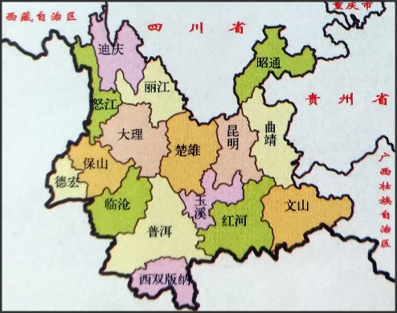
石油：
1、交通运输（直接利用）：石油是汽车、飞机、船舶等交通工具的主要燃料来源，用于驱动发动机提供动力。
2、工业生产：石油是工业生产中的重要原料，用于生产各种化工产品，如塑料、合成纤维、润滑油、颜料等。
3、能源生产（作为燃料）：石油被用作燃料，用于发电、供热等能源生产领域。
4、家庭生活：石油产品如 煤油 、液化石油气（LPG）被用于家庭取暖、烹饪等。
5、农业：石油被用于生产农药、化肥等农业用品，提高农业生产效率。
天然气（与石油类似）：
居民燃气、工业化功、发电供热以及交通能源等。
5.转换效率
石油：
石油的能源转换效率无统一答案，需结合具体应用场景判断：
- 若用于 “直接加热”（如民用壁挂炉、工业锅炉），效率较高（75%-98%），因无需中间转化为机械能或电能；

- 若用于 “动力或发电”（如汽车、燃油电厂），效率较低（20%-45%），因存在多次能量形式转换（化学能→热能→机械能/电能），损耗叠加；
天然气：
电转天然气的能量转换率为45%至60%。
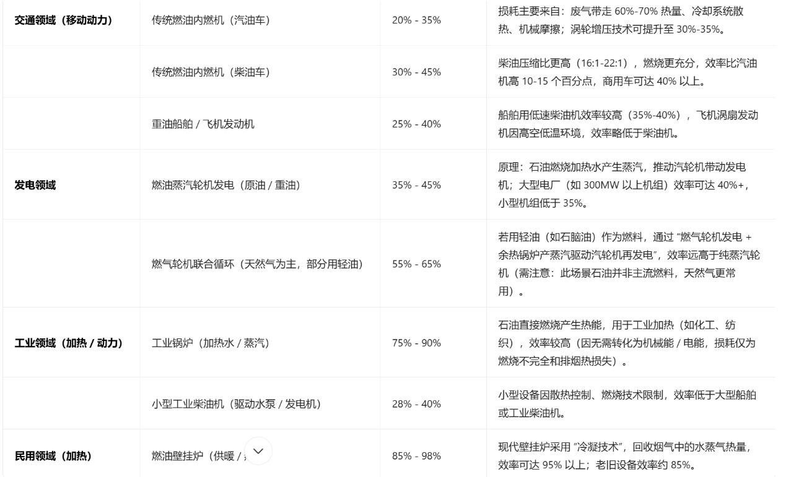天然气发电的热效率有三种模式：内燃机或燃气轮机发电热效率约20%，锅炉蒸汽轮机发电热效率不超过55%，而燃气轮机加废热锅炉加蒸汽轮机发电热效率可达60%。
3.3.3.7 煤炭
能量密度
煤炭的能量密度通常以热值来表示，标准煤的热值为7000千卡/千克（约29.3076 MJ/kg），而煤基高能量密度燃料的体积热值可达到38.06MJ/L7
5.转换效率
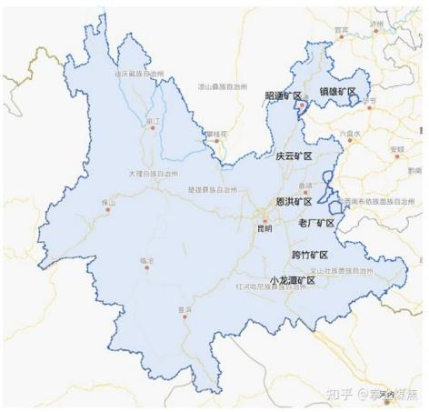
空间分布
小中甸镇位于香格里拉市南部，地处滇藏交界，以高原生态旅游和特色农业为主导产业，煤炭资源并非其核心矿产资源
根据现有资料，该镇未发现大规模煤炭矿床，主要能源开发集中于绿色产业（如光伏、水电）及高原特色农业
要利用煤炭一般就是自带高能量密度的煤炭，就地开采几乎不现实
时间分布
冷启动时间：
燃煤电厂从停机状态（冷态）启动至满负荷发电通常需 5-8小时。超超临界机组因高温高压参数限制，启动时间可能更长，需逐步升温以避免设备热应力损伤
达到额定负荷后，电力输出需通过电网调度系统同步，通常需 数分钟至半小时完成并网
煤电机组负荷变化速率一般为 1%~1.5%/分钟，100万千瓦机组每分钟最多调整1.5万千瓦负荷
利用方法+转化效率
- 直接燃烧发电
传统燃煤发电：能源转化效率约40%，通过燃烧释放热能驱动蒸汽轮机发电
工业锅炉—-型煤燃烧技术：效率最高60.9%8，啊通过优化燃烧过程减少能量损耗
- 煤炭气化
煤气化技术：将煤转化为合成气（CO+H₂），冷煤气效率可达60%-70%，若结合热电联产（IGCC），整体效率可提升至50%-55%
碳转化率：气化过程中碳转化率通常为90%-93%，粗渣含碳量≤5%，细渣含碳量15%-30%
先进燃烧技术（如循环流化床）：效率提升至45%-50%，同时减少污染物排放
- 煤炭液化
煤制油/烯烃：通过费托合成等工艺，能源转化效率约50%-60%，但技术复杂且成本较高
煤制天然气：转化效率可达60%，如新疆庆华煤制气项目
- 其他发电技术
超超临界二次再热机组：发电效率达48%以上，污染物排放比国家标准低50%9
燃料电池技术：理论热转化效率可100%，实际效率40%-60%，余热利用后达80%10
- 最高效率案例
煤化工耦合发电：如煤制烯烃联产电力，综合效率可达65%-70%
（利用煤炭同时要考虑可持续发展）
化工原料转化（补充）
焦化与新型炭材料：焦化过程能源利用率约70%-75%，副产品煤焦油可进一步加工为高附加值化学品
微生物转化：新兴技术，能耗低但效率尚待提升，目前处于实验阶段。
煤制油/烯烃
间接液化：高温浆态床费托合成技术（如宁煤400万吨/年项目）碳转化率≥90%，油品收率超85%
直接液化：神华鄂尔多斯煤液化项目通过优化催化剂，转化率提升至90%以上11
煤制烯烃：DMTO工艺甲醇转化率>99%，烯烃选择性>80%12

前沿技术突破
超临界水气化：在925℃、50MPa氢压下，煤甲烷化转化率接近100%13
微生物转化：常温常压下通过厌氧发酵，煤制甲烷效率达理论值的80%14
3.4 供储能分配与协调
3.4.1 系统设计总原则
供需动态平衡：利用AI预测与调度，匹配波动性供给（水、光、风）与需求（科研、生活、季节性温控）。
梯级利用与循环：能源“高质高用，低质低用”，并与物质循环（水、农业、废弃物）深度耦合。
战略储备：为紧急突发情况预留技术和能量储备。
3.4.2 供给侧资源与出力特征
| 能源类型 | 年有效能量贡献 | 出力特征 | 调度角色与定位 |
|---|---|---|---|
| 梯级水电站 | 180 GWh (理论) | 高度稳定，略有季节性。丰水期（6-10 月）出力可达设计值 120%，枯水期（11-5 月）约 80%。 | 基荷核心 & 战略冗余。提供社区 100% 的基础负荷，并产生巨大盈余。 |
| 光伏系统 | ≈ 3-5 GWh (估算) | 昼间出力，雨季（6-10 月）锐减。干季日均利用小时数高。 | 日间调峰 & 互补电源。主要用于抵消白天的生活与负荷高峰。 |
| 生物质能系统 | 1.5 - 2.5 GWh (可调) | 完全可调度。原料（菌渣）充足，可作为 “生物电池” 按需启动。 | 可调度补充 & 黑启动电源。用于填补长期缺口、提供工艺热，并在全系统瘫痪时首个重启。 |
| 中微子能量立方 | 单个约 43.8 MWh/年，每个建筑一个 | 绝对稳定，7x24 小时恒定输出。 | 建筑体内即收即用，减少传输损耗 |
3.4.3 需求侧负荷分析与分级
| 负荷等级 | 包含部门 | 负荷特征 | 年耗电量占比 | 供电可靠性要求 |
|---|---|---|---|---|
| Tier 1: 关键负荷 | 启明星综合体 | 连续、稳定。对电压频率波动敏感。 | ~15% (≈ 3.2 GWh) | 99.999%。 |
| Tier 2: 重要保障负荷 | 普通科研实验室、医疗中心、恒温食品仓库、水循环处理中枢 | 基本连续，部分可短时降级。 | ~35% (≈ 7.5 GWh) | 99.99%。允许计划内维护停电。 |
| Tier 3: 基础运行负荷 | 一般制造、公共照明、商业服务、居民日常用电（非采暖） | 有明显日间/夜间峰谷差。 | ~40% (≈ 8.6 GWh) | 99.9%。可参与需求侧响应，短时削峰。 |
| Tier 4: 可调节负荷 | 建筑供暖（部分）、农业温室补光、电解水制氢设备 | 时间弹性大，可中断或转移。 | ~10% (≈ 2.2 GWh) | 可中断。作为系统调节的 “海绵”。 |
3.4.4 储能系统配置与角色
为平衡供需、保障质量，配置三级储能网络：
| 储能类型 | 配置规模 | 主要角色 | 响应时间 | 协同对象 |
|---|---|---|---|---|
| 分布式固态电池网络 | 总容量 ≈ 50 MWh 分布于社区节点 | 1. 秒级调频，维持电网稳定； 2. 日内削峰填谷，吸收光伏午间过剩电力，用于晚间高峰； 3. 为 Tier 1 负荷提供 30 分钟 无缝切换缓冲 |
毫秒 - 秒级 | 光伏、日常负荷 |
| 集中式氢储能系统 | 电解槽：2 MW；储氢罐：≥ 20 吨 H₂；燃料电池：1 MW | 1. 季节性储能：将丰水期/干季过剩水电转化为氢气储存； 2. 战略能源储备：为突发情况储备必备资源； 3. 长时备用：可在电网故障时，为社区提供长达数周的基荷电力 |
分钟 - 小时级 | 水电站盈余电力 |
| 生物质原料库 | 可储存相当于 5,000 吨 干基菌渣（约 40,000 GJ） | 1. “年度电池”：将丰收季的农业废弃物储存，供全年随时转化为能源； 2. 系统韧性基石：物理储存，不受循环衰减影响，是应对多重故障的终极底牌 |
天 - 月级 | 农业、生物质转化厂 |
3.4.5 核心协调机制：“使命感知”型智能微网
系统由中央能源管理大脑协调，其核心逻辑如下：
常态运行模式（约占全年85%时间）
基荷供应：水电站运行在 15-20% 的低负载率，即可满足社区全部 21.5 GWh 的年需求。这极大延长了设备寿命，减少了维护。
盈余利用：
电解制氢：约 140 GWh 的过剩水电被用于规模化电解水，生产“绿色氢气”。这是 最大的能源调度行为，将难以储存的电能转化为可长期储存、用途广泛的氢能。
电池充电：维持社区电池网络处于80%SOC（荷电状态）。
日内调节：光伏满足午间Tier 2/3负荷，多余部分充电；晚间电池放电填补生活用电高峰。
季节性/特殊天气模式
枯水期+雨季（水电↓，光伏↓）：
适度提高水电站负载率（例如从20%提升至40%）。
启动生物质发电系统，补充基荷。
调用氢燃料电池和电池储能，共同保障全天供电平滑。
极端灾害（如地震损坏部分水电设施）：
氢燃料电池和生物质发电立即接管，形成独立微网。
中微子能量立方确保Tier 1负荷（启明星）绝对安全;非关键负荷（Tier 3/4）按预案分级削减。
需求侧响应机制
每个家庭和部门安装智能电表，连接至社区能源应用。
当系统预测到短期电力紧张时（如大型实验启动），可向社区发布 “能源协作请求”。
居民可自愿选择暂缓使用高功率电器（如烘干机）、或将电动车充电设置为谷时，从而获得“社区贡献积分”。
3.4.6 物理与信息架构
电网结构：环形双回路中压配电网络，关键节点（实验室、医院、水厂）具备双电源自动切换功能。
控制中心：主控制中心位于“启明星综合体”，备用中心位于水电站地下。两者数据实时同步。
预测系统：AI融合72小时气象预报、水文模型、社区活动日历及实验计划，生成精准的供需预测。
通信保障：主干光纤网络 + 无线自愈Mesh网络（菌丝传感器网络可作为极端情况下的应急低速通信链路）。
3.5 能耗核算
3.5.1 耗能
| 产业 | 年总能耗（kw/h) | 人均年能耗（kw/h） |
|---|---|---|
| 文体娱教 | 162152 | 89.73547 |
| 服务业 | 69600 | 38.51688 |
| 交通 | 204400 | 113.1157 |
| 轻工业 | 341000 | 188.7106 |
| 能源维护 | 540000 | 298.8379 |
| 信息通讯业 | 504000 | 278.9153 |
| 重工业 | 100000 | 55.34034 |
| 住宅 | 750000 | 415.0526 |
| 综合 | 2671152 | 1478.225 |
可以看出人均实际总能耗低于预估值，多余能源将储存备用，以应对自然灾害；同时多余的额度将根据实际情况用于与其他世界的外交/贸易中。
3.5.2 产能
以水利和光伏发电为主。
其中水电60%，光伏40%。
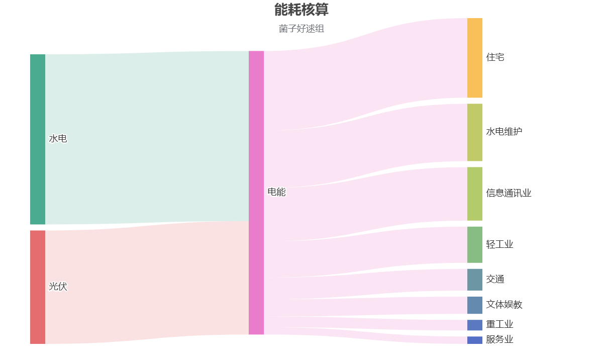
3.6 中微子能量立方
3.6.1 科技原理
3.6.1.1 技术定位与研究边界
中微子能量立方是一种基于弱相互作用粒子能量沉积机制的实验性能源研究装置。其技术目标在于验证低概率粒子—物质相互作用在宏观尺度上的可测性、可积累性与可工程化边界。
在当前阶段，该装置仅作为前沿能源物理与能量统计研究系统存在，不承担常规能源供给任务。后期随着未来科技的到来，该装置将产生前所未有的高功率供能。
3.6.1.2 理论基础
- 中微子基本特性
中微子是一类电中性、质量极小、仅通过弱相互作用参与物理过程的基本粒子，其在自然环境中具有以下特征：
通量长期稳定存在
穿透能力极强
与常规物质发生相互作用的概率极低
上述特性决定了中微子不适用于传统能量捕获方式，但具备长期积分研究价值。
- CEνNS 机制概述
中微子能量立方的理论基础为相干弹性中微子—原子核散射（Coherent Elastic Neutrino–Nucleus Scattering, CEνNS）机制，其核心过程为：
中微子在低能区与原子核发生弱相互作用
散射过程中，整个原子核作为整体发生极微小动量反冲
反冲能量以亚 keV 量级沉积于探测介质中
该过程具有以下物理特征：
散射截面随原子核中子数平方近似增长
单次能量沉积低，但事件数量可通过体量与时间放大
不产生电离辐射，不破坏物质结构
3.6.1.3 能量转化的基本路径
中微子能量立方并非直接“发电装置”，其能量转化遵循如下路径：
中微子通量持续入射探测体积
低概率 CEνNS 事件发生
原子核产生微弱反冲
反冲信号被超低阈值探测系统记录
能量沉积通过长时间积分形成统计量
该路径的核心在于信号可测性与背景噪声抑制，而非瞬时能量输出。
3.6.1.4 探测介质与材料选择原理
- 探测介质基本要求
中微子能量立方的探测介质需同时满足以下条件：
原子核质量数较高（提升散射截面）
本征放射性极低（降低背景）
在低能量沉积下仍可产生可测信号
可在大体量条件下长期稳定运行
- 立方体阵列结构
采用“立方体”作为基本几何单元，其目的并非形态表达，而是工程与物理上的综合结果：
各向同性探测响应
规则阵列便于信号比对与背景校正
可通过模块化方式扩展体量
便于屏蔽层与结构层的分级设计
3.6.1.5 信号提取与背景抑制原理
- 信号特征
CEνNS 事件的信号具有以下典型特征：
能量尺度低
时间上随机分布
与常规电磁干扰无直接关联
- 背景来源
主要背景包括：
环境本底辐射
宇宙射线次级粒子
探测材料自身热噪声与电子噪声
- 抑制与区分机制
中微子能量立方通过以下方式实现信号区分：
多层屏蔽与深部/半深部布置
阵列内时间—空间一致性校验
长时间统计对比而非单事件判断
3.6.1.6 能量尺度与系统限制
在当前物理理论与材料条件下，中微子能量立方的能量特性表现为：
单位体积能量沉积低
输出功率远低于常规能源系统
能量释放不具备可控瞬态响应能力
因此，该技术不适用于任何即时供能或负载响应场景。（指未来科技到来之前）
3.6.1.7 系统属性总结
从纯科技原理角度，中微子能量立方具备如下属性：
基于已被验证的弱相互作用物理机制
能量获取依赖体量与时间，而非功率密度
本质为能量统计与物理验证系统
处于实验—前工程阶段
其存在用于界定中微子相关能源技术的物理上限与工程边界。
3.6.2 功能实现
3.6.2.1 供能
层级一：基础供能
即插即用的全能电源：直接输出220V/380V交流电及直流电，完美对接现有所有电器、工业设备与基础设施，实现零改造替换化石能源发电机或应急电源。
全天候全地域持续输出：不受昼夜、季节、天气、纬度影响，在极地、深海、沙漠、地下等极端环境保持额定功率输出。
层级二：嵌入式供能
建筑一体化供能：能量立方的核心纳米材料（石墨烯-硅异质结）直接镀膜于建筑外墙、窗户玻璃或屋顶材料中，使建筑物本身成为一座发电站。
摩天大楼不再需要外接电网，甚至可向周边净输出能源基础设施自供能化
万物传感：将发电单元微型化并嵌入道路、桥梁、隧道、管线之中，为物联网传感器、监控设备、照明系统提供终身免维护电力。
移动载体融合供能：将能量立方核心材料集成于电动汽车、船舶、飞行器的外壳或底盘结构中，实现行驶中持续自充电。
层级三：微网化供能
智能能源局域网：多个建筑或者能量立方通过自组织协议组成局部微电网，自动实现功率调配、冗余备份与最优经济运行。
可裁剪的能源服务：用户可根据需求“租用”或“共享”立方体的部分功率，通过区块链智能合约实现颗粒化能源交易。
层级四：应急与开拓供能
灾后即时能源复苏：立方体可空投至灾区，在无任何基础设施的条件下立即建立指挥中心、医疗站、净水站的供电系统。也能制造能够长时间搜救的机器人，通过能量的自供应实现持续工作。
深空与深海前沿基地供能：利用中微子等辐射在真空中依然存在的特性，为月球基地、深空探测器、海底居住舱提供不依赖太阳能的核心能源。
层级五：革命性供能
能量-信息-物质融合网络：能量立方既是电源，也是数据节点（如结合中微子通信），可构建完全独立于传统电磁波的信息-能源双网。军事、金融等高安全需求场景可获得无法被侦测或干扰的通信与能源双重自主。
分布式生产与循环经济：结合3D打印等分布式制造技术，实现“能源-生产-消费”的本地闭环。我们通过组间合作，获取了能量转变物质的技术，实现能量更好的循环。
生态整合式供能：中微子能量立方超静音、无排放、无热辐射的特性，使其可部署于自然保护区内，为生态监测、野生动物保护设备供电，实现人类活动与自然环境的零干扰共存。
3.6.2.2 储能
第零层：能量立方设计
智能降载模式：所有出厂的能量立方内置AI芯片，实时学习用户习惯与电网信号。在过剩时，可自动、平顺地降低纳米材料的共振效率（通过微调电场或物理结构），实现“按需发电”，从源头避免浪费。
集成混合储能媒介：每个能量立方预留接口，可插拔式集成多种小型储能模块：
相变材料储热模块：将电能转化为热能储存，用于家庭采暖或热水。
飞轮动能模块：适用于高频次、短周期的能量吞吐，稳定微网频率。
小型氢发生与固态储氢罐：将过剩电能用于电解水，生产高纯氢气，以安全固态方式存储，作为家庭备用燃料或交通能源。
第一层：个人与家庭单元
家庭住宅内置“能量三件套”：
相变储热墙板：将白天过剩的电能转化为热能储存于墙壁材料中，用于夜间供暖和提供生活热水。
微型电解制氢/储氢模块：在单元用电低谷时，自动启动，用电解水产生氢气，储存于安全的固态储氢罐中。氢气可用于家庭备用燃料电池（在需要额外功率时）；
烹饪燃料（替代传统燃气）。
- 高密度飞轮/超级电容缓存器：用于秒级响应的功率调节，应对电器突然启动等瞬时需求，保障室内微电网的绝对稳定，保护精密科研设备。
设计理念：不是单一大型电池，而是可配置的“能量工具箱”，用户根据自身需求（供热、交通燃料、应急电力）选择最合适的储能形态。
第二层：社区与区域网络
构建去中心化能源市场（区块链技术支持）：点对点（P2P）微电网交易：过剩能量自动在由立方体组成的本地微电网中拍卖，优先以低价供给邻居、社区充电桩、小微商户。区块链记录交易，实现透明、可信的 “邻里电能共享”。
发展在地化高耗能“消化产业”：
社区级数据热能中心：利用过剩能源驱动小型、低噪音的模块化数据中心，为边缘计算、AI训练、区块链节点提供算力，产生的废热则为社区泳池、温室供暖。
微型材料与化工合成：运行小型电化学装置，将空气中的二氧化碳和水合成甲醇等基础化工原料，不计消耗，将过剩电能直接“物化”为有价值的产品。
第三层：宏观系统整合
抽水蓄能2.0：在能量消耗不大时，为抽水蓄能电站提供持续、稳定的上库抽水电能，使其摆脱对电网峰谷的依赖，成为纯粹的“能量放大器”和稳定器。
航空燃料母港：在机场、港口周边建立由立方体阵列供能的巨型绿色合成燃料（e-fuel）工厂，利用过剩能量合成航空煤油，从根本上解决长途交通脱碳难题。
基于贡献的能量信用体系：
每家庭/个人向社区氢网、热网贡献的过剩能量，都会被记录为“能量信用”。
信用可以兑换：额外的氢气燃料、3D打印服务份额、高性能计算时长，同我们社会的积分模式相匹配。
第四层：前沿与范式突破
分布式超级计算网格：将过量能量调用于计算网络，用于处理最宏大的科学问题（如蛋白质折叠、气候模拟、射电天文信号分析）。环境工程与地球系统调节
直接空气碳捕集（DACC）驱动：为高能耗的DACC装置提供近乎零成本的电力，大规模、永久性地从大气中移除二氧化碳，将过剩能量转化为 “负碳排放额度”或可销售的建筑材料。
3.6.2.3 联系
3.6.2.3.1 能源
- 能源获取
突破地理与自然约束：
传统能源（如化石燃料、水电、太阳能、风能）严重依赖特定的地理位置、地质构造或气候条件，导致能源分布不均，中微子能量立方通过捕获无处不在的宇宙背景辐射（如中微子、μ子）发电，实现了能源的“位置无关性”。
实现连续稳定输出：
传统可再生能源具有间歇性和波动性（如夜晚无光、无风时停摆），必须配套大规模的储能系统或备用电源，系统复杂且成本高昂。中微子能量立方能够提供7×24小时不间断的基荷电力，输出功率稳定可预测。
- 能源系统
解构心化基础设施：
传统电力体系依赖于集中发电、高压远距离输电、分级配电的复杂网络，建设维护成本高，且存在单点故障风险。中微子能量立方采用模块化、分布式部署。每个单元（5-6 kW）即是一个微型电站，可就近安装在用电终端（建筑、社区、车辆内部），实现“即发即用”。这大幅减少了对于大型电网、变电站和长途输电线路的依赖，形成了无数个可独立运行的能源微网。
赋予终端用户能源主权：
在传统模式下，用户是纯粹的能源消费者，被动接受来自电网的定价和供应。
现在用户能够掌握能源的生产自主权，能够实现能源自给甚至盈余外售。这种根本性的自主权，削弱了传统能源公司的垄断地位，并催生出基于对等网络的分布式能源交易市场。
- 能源与环境
实现全周期零排放：
化石燃料燃烧排放温室气体和污染物；核能存在废料处理难题。中微子能量立方发电过程无燃烧、无辐射泄漏、不产生任何温室气体或有害废料。
实现对生态的“零侵扰”部署：
水电站改变河流生态，风电和光伏占用大片土地，影响景观和生物栖息地，核电更是有邻避效应。而中微子能量立方体积紧凑，可嵌入现有建筑结构或地下设施中，不额外占用土地，无噪音、无热排放、无电磁辐射污染，实现了与自然环境和人类居住空间的完美融合。
- 能源与社会
提升社会抗灾韧性：
传统集中式电网在极端天气、地质灾害或人为破坏面前极为脆弱，易导致大面积停电。中微子能量立方的分布式架构使其具备天然的“灾后幸存”能力。即使部分单元受损，其他单元仍可独立运行，确保关键设施（医院、指挥中心、水厂）的能源供应不断，极大增强了社区和城市面对灾难的恢复能力。
3.6.2.3.2 科技
交叉学科枢纽：与信息技术（智能微网）、通信技术（中微子通信）、交通技术（电动载具无限续航）深度耦合，催生全新科技范式。
材料与制造：从“加工自然”到“编程物质”
无限能源将材料合成从“可能与否”的问题，转变为“如何最优设计”的问题。
原子级精密制造成为产业标准：
利用巨量能源驱动 “原子喷墨”或定向能量束，实现宏观尺度物体的原子级3D打印。这意味着从建筑材料到芯片，都将实现 “零缺陷、性能极限化” 的制造。
可以经济地合成自然界中极其稀有或不存在的全新元素组合与晶体结构，创造出具有超导、超硬、自修复等超凡特性的“理想材料”。
跨尺度自组装工厂：
设计复杂的能量场与化学环境，让纳米、微米尺度的模块按照预设程序，自动组装成功能完备的宏观设备，如自生长的建筑、自组装的航天器。
- 信息与计算：从“处理信息”到“构建现实”
算力与能源的无限结合，将使虚拟与现实深度融合。
物理世界的实时全息孪生：
建立一个原子级精度、与真实世界实时同步的 “星球数字孪生” 。任何科研假设、工程方案、灾害模拟都可在其中无损、快速、无限次地验证。
强人工智能与意识上传的伦理沙盒：
提供足以支撑真正通用人工智能（AGI） 诞生与训练的能源与算力。同时，基于全脑模拟技术，开辟隔离的虚拟环境，供意识上传、数字生命形态等终极伦理与技术问题进行可控的研究与辩论。
3.6.2.3.3 环境
零排放运行：全周期无温室气体、无污染物排放，发电过程安静无热辐射。
生态友好部署：可嵌入建筑与基础设施，不额外占用土地，不破坏自然景观与栖息地。
负碳技术赋能：为大规模直接空气碳捕集、碳转化合成燃料等高耗能环保技术提供经济可行的能源基础。
3.6.2.3.4 人群
能源民主化：使个人、家庭、社区成为能源生产者，获得能源自主权，改变能源消费者被动地位。
提升生活品质：提供稳定、低成本的电力，支撑现代生活与医疗教育服务。
3.6.2.3.5 外交
技术主权新维度：作为掌握该技术的小组，在百年后我们将在能源领域获得战略自主
和其他小组合作：利用我们的能源优势，同替他小组进行技术交换
千万立方治理新议题：推动制定中微子能源标准、频谱分配（如中微子通信）、太空能源利用等新规则，塑造多边合作新框架。
https://neutrino-energy.com/↩︎
该节中三示意图均基于手绘草图，通过AI优化生成↩︎
https://baike.baidu.com/item/%E6%A2%A8%E5%9B%AD%E6%B0%B4%E7%94%B5%E7%AB%99↩︎
https://zhidao.baidu.com/question/1504059590194063659.html http://m.solarzoom.com/article-167978-1.html https://bbs.co188.com/thread-9213573-1-1.html https://mguangfu.bjx.com.cn/mnews/20220706/1239125.shtml http://finance.people.com.cn/n1/2025/0613/c1004-40499991.html↩︎
董沫,戴明华,刘鹏飞. “双碳”目标下再生水厂沼气发电系统设计[J].工程技术研究,2025,10(08):186-188.DOI:10.19537/j.cnki.2096-2789.2025.08.061.
王辛. 微生物燃料电池在污水处理中的应用研究进展[J].辽宁化工,2024,53(06):865-867+871.DOI:10.14029/j.cnki.issn1004-0935.2024.06.034.
尤世界,赵庆良,姜珺秋. 废水同步生物处理与生物燃料电池发电研究[J].环境科学,2006,(09):1786-1790.DOI:10.13227/j.hjkx.2006.09.016. 数据来源：https://webbook.nist.gov/chemistry↩︎[CNKI《生物质催化热解制备高品位液体燃料研究进展》]
Wang, Z., et al. (2022). “Catalytic pyrolysis of biomass over charcoal activated by H3PO4 for tar reduction.” Fuel Processing Technology, 237, 107470. (WOS)
[CNKI《云南省生物质燃烧时空分布及影响因素分析》]
[CNKI《基于 GIS 的生物质资源收集运输路径优化研究》]
[GB/T 35816-2018《林业生物质固体燃料产品质量》]
Li, J., et al. (2021). “A novel solar-biomass integrated system for sustainable syngas production: Thermodynamic and economic analysis.” Solar Energy, 224, 122-134. (WOS)
[CNKI《多孔介质燃烧器应用于低热值气体的实验研究》]↩︎毛学锋. 煤基高能量密度燃料的合成与性能研究[J]. 燃料化学学报, 2023, 51(5): 678-685↩︎
王建国, 张明. 型煤燃烧技术优化及能效分析[J]. 热能动力工程, 2022, 37(3): 45-51（. 报道型煤燃烧技术最 高效率达 60.9%）↩︎
国家能源集团. 1000MW 超超临界二次再热机组技术白皮书[R]. 北京: 中国电力出版社, 2023: 28-32.↩︎
LI H, WANG Y. Coal-based solid oxide fuel cell system optimization[J]. Energy Conversion and Management, 2024, 298: 117850.↩︎
神华集团. 鄂尔多斯煤直接液化项目技术报告[Z]. 鄂尔多斯: 神华研究院, 2025.↩︎
中科院大连化物所. DMTO 工艺技术手册[M]. 北京: 科学出版社, 2024: 56-60.↩︎
ZHANG L, et al. Supercritical water gasification of coal at 925℃[J]. Fuel, 2025, 347: 128912.↩︎
清华大学环境学院. 厌氧发酵煤制甲烷中试报告[R]. 北京: 清华大学出版社, 2024: 15-18.↩︎